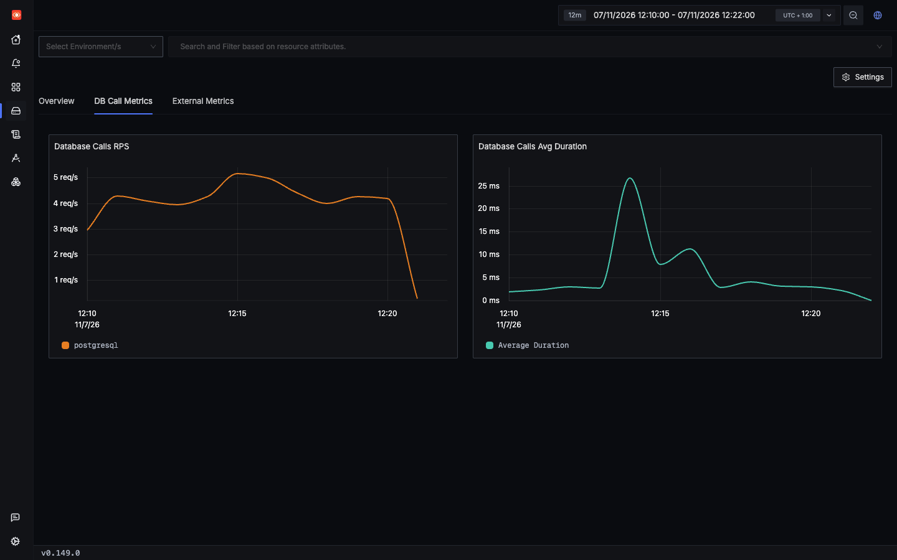
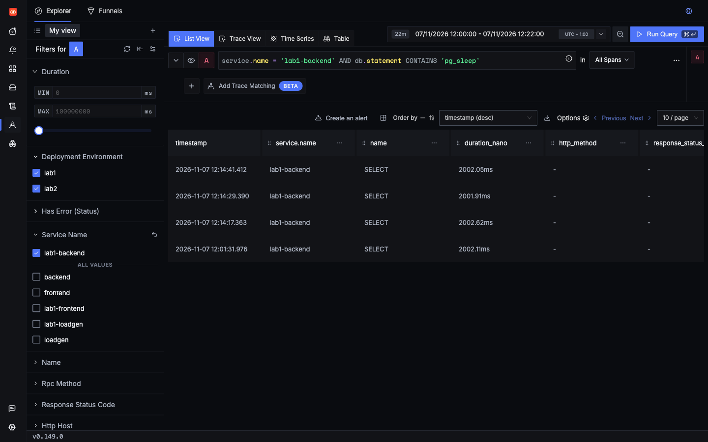
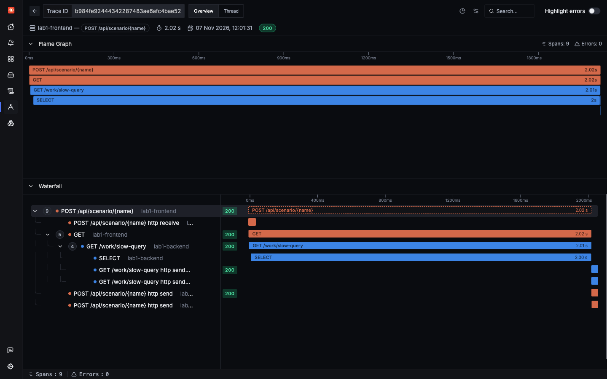

Lab 1: incident 4 of 6
A slow SQL query
The app is slow because of one statement. The agent the Operator injected records every statement, so you can find it by its text, with no changes to your queries or your code.
1Trigger it
The slow_query scenario runs SELECT pg_sleep(2). It is not part of the load mix, so fire it yourself before searching.
2Symptom
A saved run returned HTTP 200 after 2,028 ms. As in the latency incident there is no error, only a slow response. What is different is what you find under the backend span.
3Where to look
- Open a slow trace, and look for a long database span.
- Search by database attributes in the Traces Explorer.
- Use the DB Call Metrics tab on /services/lab1-backend for a chart of database calls.
That tab is built in, for every service. Nobody created it, and the app sends no database metrics. SigNoz's own collector derives them from spans, with its signozspanmetrics processor: every span with db.system on it becomes a count and a total duration, in signoz_db_latency_count and signoz_db_latency_sum. Here that's lab1-backend, Lab 2's backend and Lab 5's lab5-app. Query API only
The tab charts two things, calls per second and average duration, by db.system. Those metrics also carry db.name, but not the statement, so they can tell you that a service's database calls got slower, not which query. For that, go back to the spans. They also average, so a few slow calls among many fast ones barely move the line.

lab1-backend. Seen in SigNoz UI The spike in average duration is three pg_sleep calls, fired during the load run.4Search
Search for all slow database calls first:
Or find a statement by its text:

For a broader view, aggregate by statement type:
5Evidence

SELECT span fills almost all of the backend span.lab1-backendServer span: 2,014.8 ms. ItsSELECTchild: 2,002.1 ms. So over 99% of the time was in Postgres.- That span is a Client span, so it measures the wait from the app's side. It includes network time, not only query time.
- The statement is
SELECT pg_sleep(%s). Bound values are not recorded, which also keeps user data out of spans.
Compare this with the latency incident. There, a long span had no children, which pointed at the code. Here, a long child points at the database.
Real outliers you did not ask for
The load run also had slow statements that no scenario caused:
INSERT averaged 4.6 ms but reached 204.8 ms, and the list SELECT averaged 3.9 ms but reached 156.8 ms. The five slowest of these fell at 11:11, 11:12, 11:14, 11:19 and 11:20 UTC, so none was inside the CPU burn. The cause was not identified. This is how a real problem would look: rare, and invisible in the averages, but easy to find with one search.
6Root cause
labs/lab1-hands-off/app/backend.py lines 124–128124@app.get("/work/slow-query")
125def slow_query(seconds: float = 2.0) -> dict:
126 with db() as conn:
127 conn.execute("SELECT pg_sleep(%s)", (seconds,))
128 return {"query_s": seconds}The statement sleeps on purpose. In a real incident this is where you would run EXPLAIN (ANALYZE, BUFFERS) on the statement, and look for a missing index, a large scan, or lock waits. Spans tell you which statement. They do not tell you why Postgres was slow.
7Resolution
Fix the query itself first. Then add a safety net, so that one bad query cannot hold a request open:
def db() -> psycopg.Connection:
- return psycopg.connect(DSN, autocommit=True)+ return psycopg.connect(DSN, autocommit=True, options="-c statement_timeout=1000")With this in place the statement fails after one second. You see a failed SELECT span instead of a slow one, which you can find with the Failed database calls search.
Try the safety net
- Change it. Make that edit in
labs/lab1-hands-off/app/backend.py, and save it. - Deploy it, from the repo's root. Saving the file isn't enough, because the pods run the image from the last build. What this command does.
make lab1 - Fire the same request. It should now fail with HTTP 500 after about 1.4 seconds. Before, it answered 200 after about 2.2 seconds.
- Check SigNoz. The Failed database calls search should find the failed
SELECT, and the Exceptions page should listpsycopg.errors.QueryCanceled. - Put the bug back, because this page's button needs the slow query to succeed.
git restore labs/lab1-hands-off/app/backend.py make lab1
Check yourself: db.statement shows SELECT pg_sleep(%s). Why not the real value?
Check yourself: Which span tells you the time went to Postgres rather than to Python?